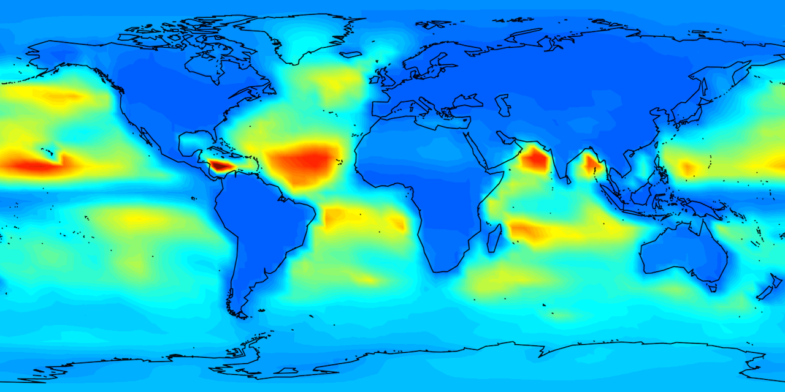
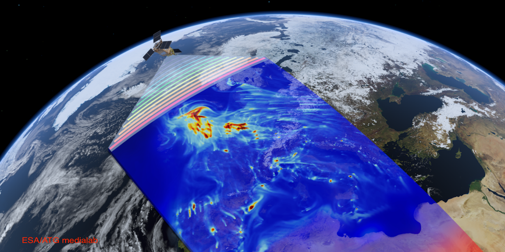

Atmospheric chemistry modeling is a vibrant field, integrating cutting-edge knowledge from laboratory, theory, and field studies. Modeling plays a crucial role in identifying key processes governing the distributions of atmospheric species at various spatial and temporal scales. Modeling is also central to assessing impacts of atmospheric chemistry on air quality, public health, and climate.
We are interested in (1) using atmospheric chemistry models to interpret observations from aircraft, ground networks, satellites, and other platforms, (2) applying modeling technique to atmospheric chemistry problems of pressing environmental concern, and (3) developing chemical data assimilation tools to manage the massive flow of satellite data.

Satellites continuously measure trace gases (e.g., ozone, SO2, NO2, HCHO, CHOCHO, BrO, CO2, NH3, and CH4) on a global scale. Observations from space have been used extensively to monitor air quality, to quantify health effects, to constrain emission inventories, and to understand atmospheric chemistry processes.
We are working on (1) exploiting satellite trace gas retrievals for air quality applications, (2) validating and intercomparing satellite retrievals, (3) developing and updating satellite trace gas retrieval algorithms, and (4) providing operational satellite trace gas products.